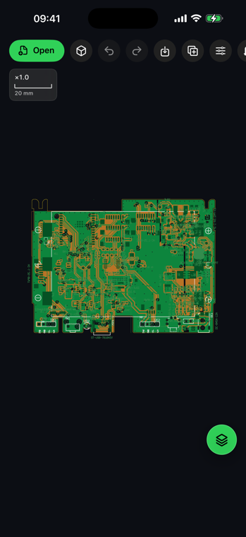
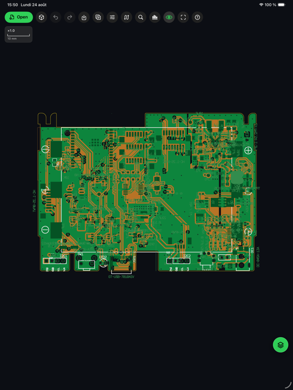

Local par conception
Vos fichiers PCB sont ouverts et traités sur votre appareil. AGBoard ne piste pas ses utilisateurs et ne vend aucune donnée personnelle.
Bientôt sur l'App Store
Éditeur PCB pour iPhone et iPad
Ouvrez vos fichiers Gerber, Excellon, ODB++, Eagle et placements de composants. Inspectez des cartes denses, mesurez les clearances, modifiez des formes, transformez des calques et exportez des rapports propres, directement depuis iOS.
Sortie App Store en préparation. Versions Mac et Windows prévues pour décembre 2026.
Support : support@agboard-app.com
AGBoard sur iPhone et iPad. Les cartes montrées sont des designs publics open-source.


Vos fichiers PCB sont ouverts et traités sur votre appareil. AGBoard ne piste pas ses utilisateurs et ne vend aucune donnée personnelle.
Zoom par pincement, déplacement, filtres de calques, couleurs réalistes, grille et aimantation : inspectez vos cartes partout.
Images PNG HD, PDF vectoriels multi-pages (une page par calque), rapports CSV des calques, DRC léger en CSV, impression AirPrint et fichiers projet partageables.
Sur iPhone comme sur iPad, ouvrez vos fichiers depuis Fichiers ou iCloud — un fichier seul ou une archive de fabrication complète, toutes les couches d'un coup. Sur iPad, vous pouvez aussi les glisser-déposer directement sur le canvas.
Zoomez jusqu'au plus petit pad, basculez les couches, mesurez distances et clearances, et trouvez n'importe quel composant ou net en quelques secondes.
Partagez des PNG HD, des PDF vectoriels multi-pages, des rapports CSV — ou un fichier projet que votre équipe rouvre tel quel.
Gerber RS-274X/X2 (couches internes comprises), perçages Excellon, jobs ODB++ avec panneaux dépliés, designs IPC-2581, cartes Eagle .brd, fichiers job Gerber (.gbrjob), netlists IPC-D-356 et placements composants CSV/TXT/POS.
Oui. Chaque fichier est analysé et affiché sur votre appareil — rien n'est envoyé sur internet, aucun compte n'est requis et l'app ne contient aucun pistage.
AGBoard est gratuite à télécharger. Souscrivez un abonnement mensuel ou annuel pour bénéficier de l'essai gratuit de 3 jours ; annulez pendant l'essai pour éviter toute facturation. Sans annulation, le plan choisi se renouvelle automatiquement via votre compte Apple.
iPhone et iPad sous iOS 17 ou plus récent. Le rendu est accéléré par le GPU (Metal) : même les cartes denses multi-couches restent fluides.
Oui — les versions Mac et Windows sont prévues pour décembre 2026.